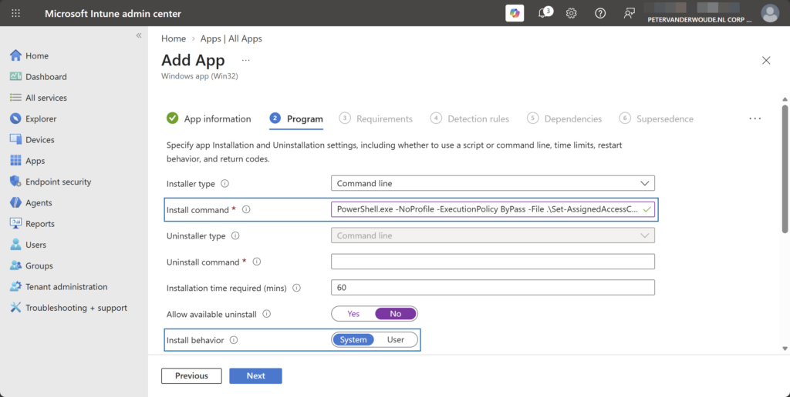
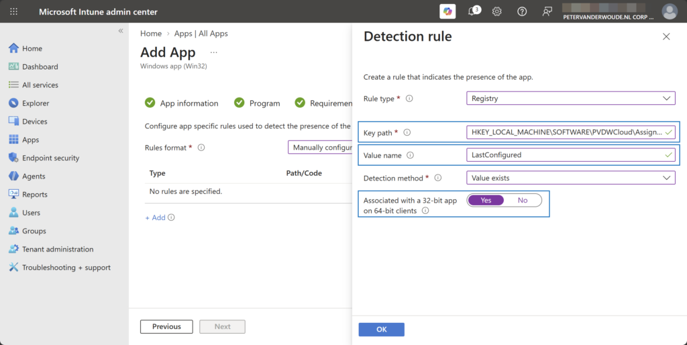
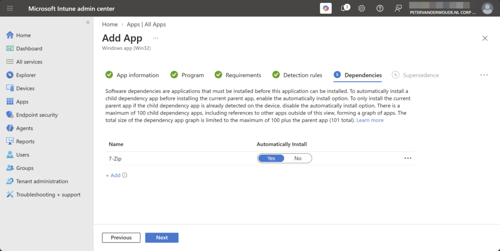
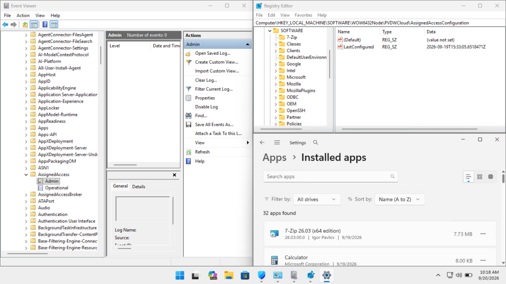

This week is all about making sure that the multi-app kiosk configuration is actually applied after the required applications are installed. The ordering is important because the multi-app kiosk configuration will not be correctly configured when the required applications where not installed when the configuration was applied. That was also an important subject during the session on the Workplace Ninja Summit about Mastering shared Windows devices in your environment. The basics around creating the multi-app kiosk configuration, using assigned access, has been described on this blog. Often, however, it refers to using a custom device configuration file. And, even though it technically works, it does not provide full control over the end-result. Given the fact that this was also subject of many questions during the session, it is about time to show an alternative. This post will go through an alternative configuration using a Win32 application that has a dependency on required applications.
Creating the alternative configuration for multi-app kiosk
The alternative configuration for multi-app kiosk, is actually pretty straightforward. The idea is to rely on configuration options that provide more control over the end-result and that is exactly what Win32 applications bring to the table. Win32 applications provide the ability to create dependencies between Win32 applications, which helps with making sure that specific applications are already installed. That can be also really useful in this specific scenario, because it is also possible to configure multi-app kiosk by using PowerShell scripting and the MDM Bridge WMI Provider. That PowerShell script can then be wrapped in a Win32 application, which can be used for creating the dependencies with the required apps.
Creating the PowerShell script to configure multi-app kiosk
As mentioned earlier, the configuration can be done by using the same assigned access XML configuration that is required for any other method for configuring multi-app kiosk. Let’s start by going through the key components of the PowerShell script. Of course that starts with setting variables. The most important variables are shown below and represent the actual assigned access XML configuration, and the assigned access namespace and class name in WMI.
$assignedAccessConfiguration = @"<!-- Paste the Assigned Access XML configuration here\. -->"@
$assignedAccessNamespace = 'root\cimv2\mdm\dmmap'
$assignedAccessClassName = 'MDM_AssignedAccess'Besides that, there are some additional variables that are pretty useful for eventually detecting that the multi-app kiosk was configured. For that, the easiest is to write information to the registry. The variables shown below represent that.
$assignedAccessRegistryPath = 'HKLM:\SOFTWARE\PVDWCloud\AssignedAccessConfiguration'
$assignedAccessRegistryValueName = 'LastConfigured'Those variables can be used for applying the configuration of the multi-app kiosk using the MDM WMI Bridge Provider. That is a pretty straightforward method to apply the configuration via PowerShell. Below is an example of that using the earlier described variables. The most important thing here is the encoding of the assigned access XML configuration.
$assignedAccessInstance = Get-CimInstance -Namespace $assignedAccessNamespace -ClassName $assignedAccessClassName -ErrorAction Stop
$assignedAccessInstance.Configuration = [System.Net.WebUtility]::HtmlEncode($assignedAccessConfiguration)
Set-CimInstance -CimInstance $assignedAccessInstance -ErrorAction StopWhen the multi-app kiosk configuration was applied, it is the easiest to write something to the registry that can be used to easily detect the applied configuration. That is very important for the Win32 application. Below is a pretty straightforward example of that using the earlier described variables. The most important thing here is the creation of the registry value.
New-Item -Path $registryPath -Force -ErrorAction Stop
New-ItemProperty -Path $registryPath -Name $registryValueName -Value (Get-Date).ToUniversalTime().ToString('o') -PropertyType String -Force -ErrorAction StopWith these core elements, it is basically already possible to configure multi-app kiosk via PowerShell. It is, however, smart to add some more logic to verify the assigned access XML, and to do some additional checks when the script fails. The latter is especially useful for the initial testing. A script that does that can be found here on Github Gist: Set-AssignedAccessConfiguration.ps1
Note: Keep in mind that the script should be tested in SYSTEM context to verify the behavior via Microsoft Intune.
Wrapping the PowerShell script that includes the multi-app kiosk configuration
Before being able to deploy the multi-app kiosk configuration as a Win32 application, it is required to wrap the PowerShell script. For that specific purpose Microsoft provides the Microsoft Win32 Content Prep Tool. The script will be wrapped into a file of the .intunewin format. Like with any other Win32 application, that file can be used in Microsoft Intune. The following five steps walk through downloading and using the Win32 Content Prep Tool, to actually wrap the created script file.
- Download the Microsoft Win32 Content Prep Tool to C:\Temp
- Add the created PowerShell script to C:\Temp\AAC
- Open a Terminal using Run as administrator and navigate to the location of IntuneWinAppUtil .exe using cd \Temp
- Run IntuneWinAppUtil.exe to start the wrapping process and provide the following information, when requested:
- Please specify the source folder: C:\Temp\AAC
- Please specify the setup file: Set-AssignedAccessConfiguration.ps1
- Please specify the output folder: C:\Temp
- Do you want you want to specify catalog folder (Y/N): N
- Once the wrapping is done the message Done!!! will be shown and a file named Set-AssignedAccessConfiguration.intunewin will be created in C:\Temp
Creating the Win32 application that includes the multi-app kiosk configuration
The wrapped PowerShell script can now be added as a Win32 application. That is a pretty straightforward process that is similar to adding any other Win32 application and can be achieved by adding an application of the Windows app (Win32) type. The following 12 steps walk through the steps to create the Win32 application by adding the created .intunewin file. As part of those steps 7-Zip is used as an example in the multi-app kiosk configuration and must be installed before the configuration is applied.
- Open the Microsoft Intune admin center portal and navigate Apps > Windows
- On the Windows | Windows apps page, click Create
- On the Select app type pane, select Windows app (Win32) and click Select
- On the App information page, select the created Set-AssignedAccessConfiguration.intunewin and click OK
- Back on the App information page, specify the basic information about the PowerShell script and click Next
- On the Program page, as shown below in Figure 1, specify at least the following information about the PowerShell script and click Next
- Install command: Specify PowerShell.exe -NoProfile -ExecutionPolicy ByPass -File .\Set-AssignedAccessConfiguration.ps1 as the installation command to make sure that the PowerShell script will be run
- Install behavior: Select System to make sure that the PowerShell script will run in the right context
{kind=link}

- On the Requirements page, specify at least the operating system details and click Next
- On the Detection rules page, as shown below in Figure 2, specify at least the following information about the detection of a successful configuration and click Next
- Rule type: Select Registry to be able to verify the created registry value
- Key path: Specify HKEY_LOCAL_MACHINE\SOFTWARE\PVDWCloud\AssignedAccessConfiguration as that should be the registry path that is created by the PowerShell script
- Value name: Specify LastConfigured as that should be the value that is created by the PowerShell script
- Detection method: Select Value exists to simply check for the existence of the registry key
- Associated with a 32-bit app on 64-bit clients: Select Yes as that is the default behavior for standard PowerShell execution
{kind=link}

- On the Dependencies page, as shown below in Figure 3, specify the dependencies of the Win32 applications that are required for the multi-app kiosk configuration and click Next
{kind=link}

- On the Supersedence page, no configuration is required and click Next
- On the Assignments page, configure the assignment for the multi-app kiosk configuration and click Next
- On the Review + create page, verify the configuration and click Create
Note: At the moment of writing, it is not possible to create a dependency on a Windows catalog app (Win32).
Verifying the alternative configuration for multi-app kiosk
When the alternative configuration for multi-app kiosk is actually applied, it is luckily also pretty straightforward to verify the configuration. Of course, the device should immediately show the expected configuration. That is especially easy to verify with an autologon multi-app kiosk configuration. For a bit more technical verification, simply check the event log, the registry and the installed apps (as shown below in Figure 4). The AssignedAccess-Admin log should not show any events, as that indicates that there where no issues during the configuration of the multi-app kiosk. On top of that installed apps should show the application that the multi-app kiosk configuration was depending on, and the registry should show the created registry key and value.
{kind=link}

Discover more from All about Microsoft Intune
Subscribe to get the latest posts sent to your email.